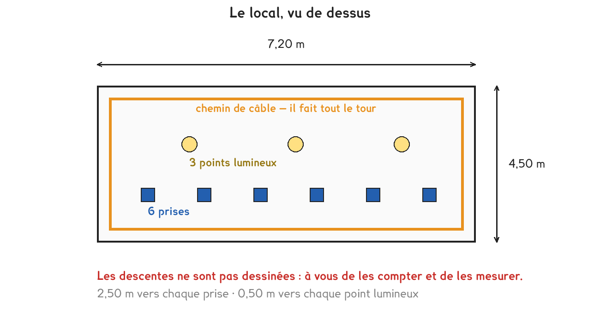

CAP · défi de dépassement
Un seul chantier, mené du métré à la négociation. Deux données du dossier ne servent à rien, les repérer fait partie du travail.
4 questions · 7 exercices · 1 repli · 1 figure
Savoirs travaillés

Toutes les données d’un dossier ne servent pas. Sur un vrai devis on en donne toujours trop, et il faut savoir écarter celles qui ne servent à rien avant de commencer à calculer.
Le local. Longueur 7,20 m · largeur 4,50 m · hauteur sous plafond 2,80 m. 6 prises et 3 points lumineux à installer. Le chemin de câble fait tout le tour du local, à 30 cm du plafond. De ce chemin part une descente de 2,50 m vers chaque prise, et une descente de 0,50 m vers chaque point lumineux.
Les prix. Câble 3G2,5 : 1,85 €/m · gaine ICTA : 0,95 €/m, vendue par 40 m · tableau équipé : 145 € · main-d’œuvre : 38 €/h, pose estimée à 9 heures · 10 % de chutes sur le câble, rien sur la gaine.
On compte une seule descente au lieu de neuf. Il y a six prises et trois points lumineux : neuf descentes en tout, de deux longueurs différentes. Les compter à part, puis les additionner, évite d’en oublier.
Pour aller plus loin
Un câble ne se pose jamais au millimètre. On coupe un peu long pour avoir de quoi raccorder, on reprend une longueur mal engagée, on jette les bouts trop courts pour servir ailleurs.
10 % est la valeur d’usage sur un chantier électrique ordinaire. Elle monte à 15 ou 20 % sur une installation compliquée, avec beaucoup de petits tronçons.
La gaine, elle, se pose en longueurs continues et se coupe juste : on ne compte pas de chutes dessus. C’est pourquoi le dossier le précise, et c’est une donnée qui sert.
Exercice · GE
Quelle est la longueur du chemin de câble qui fait le tour du local ?
Exercice · GE
Quelle longueur totale de gaine faut-il : le tour, plus toutes les descentes ?
Exercice · AA
Quelle longueur de câble faut-il commander, chutes comprises, arrondie au mètre supérieur ?
Exercice · AA
Quel est le montant total du devis : câble, gaine, tableau et main-d’œuvre ?
Exercice · AA
Le client veut passer sous 550 €. De combien faut-il descendre le devis ?
La carte blanche du défi papier : il n’y a pas une bonne réponse, il y a des propositions défendables et des propositions qui ne tiennent pas.
Exercice · AA
Proposez au client deux façons d’y arriver. Pour chacune, chiffrez ce qu’elle fait gagner et dites ce qu’elle lui coûte en confort ou en qualité.
Exercice · AA
Laquelle défendriez-vous devant le client, et pourquoi ? Deux lignes suffisent.
Défi de dépassement. Aucun corrigé ; rien n'est enregistré, rien n'est noté.